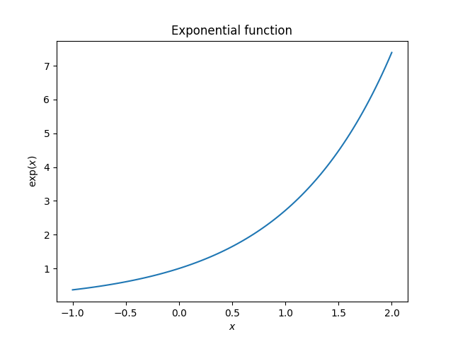
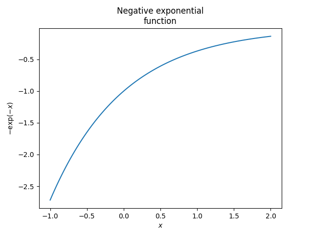

Note
Click here to download the full example code
Plotting the exponential function
This example demonstrates how to import a local module and how images are
stacked when two plots are created in one code block. The variable N from
the example ‘Local module’ (file local_module.py) is imported in the code
below. Further, note that when there is only one code block in an example, the
output appears before the code block.
TEST


# Code source: Óscar Nájera
# License: BSD 3 clause
import numpy as np
import matplotlib.pyplot as plt
# You can use modules local to the example being run, here we import
# N from local_module
N = 100
def main():
x = np.linspace(-1, 2, N)
y = np.exp(x)
plt.figure()
plt.plot(x, y)
plt.xlabel('$x$')
plt.ylabel('$\exp(x)$')
plt.title('Exponential function')
plt.figure()
plt.plot(x, -np.exp(-x))
plt.xlabel('$x$')
plt.ylabel('$-\exp(-x)$')
plt.title('Negative exponential\nfunction')
# To avoid matplotlib text output
plt.show()
if __name__ == '__main__':
main()